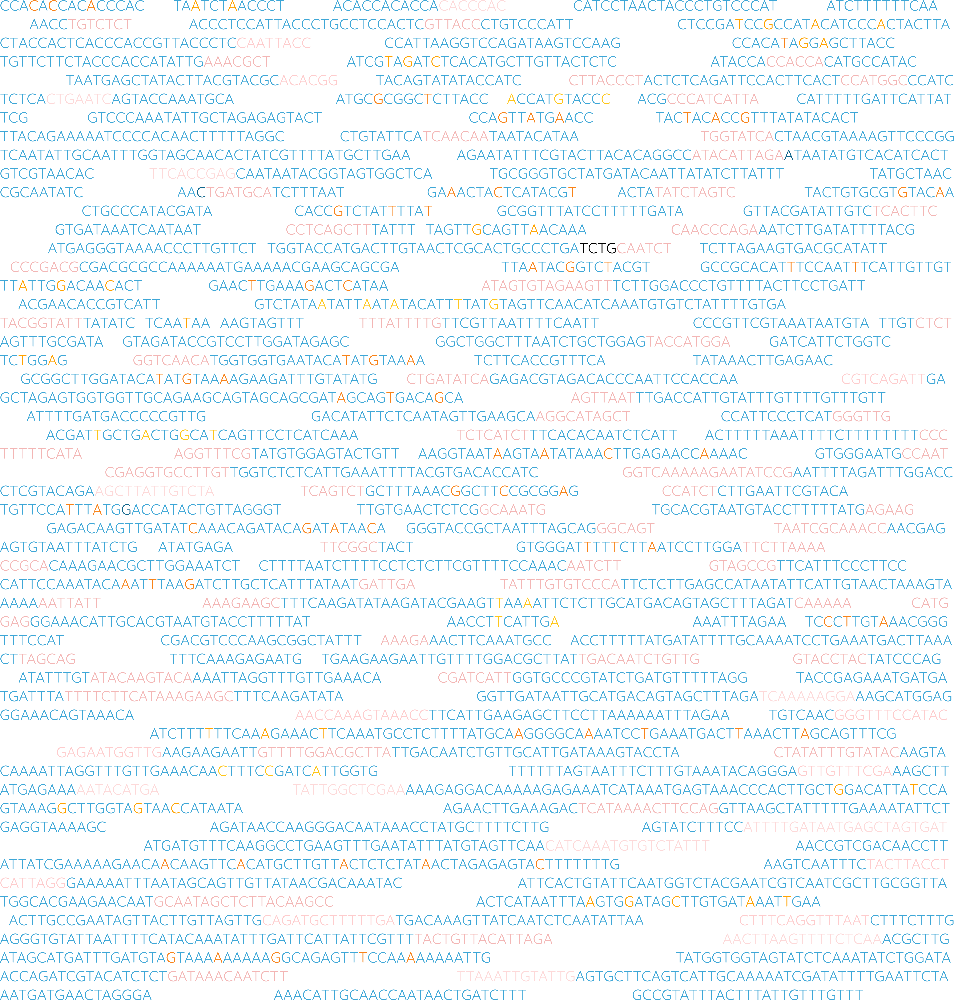

GenoPipe
Run a background check on your NGS data
EpitopeID
Check your FASTQ files to confirm epitope sequence insertions in genomic DNA.
DeletionID
Check your BAM files for regions with significant depletions of reads.
StrainID
Check your BAM files for variants and see which strain your sample most closely resembles.